TensorFlow Quantum: 混合量子-经典机器学习 *¶
我们身边的经典计算机利用比特位和逻辑门进行二进制运算。在物理硬件上，这种运算主要是通过半导体的特殊导电性质实现的。经过几十年的发展，我们已经可以在一片小小的半导体芯片上集成上亿个晶体管，从而实现高性能的经典计算。
而量子计算（Quantum Computing）旨在利用具有量子特性（例如量子态叠加和量子纠缠）的“量子比特位”和“量子逻辑门”进行计算。这种新的计算模式可以在搜索和大数分解等重要领域达成指数级的加速，让当前无法实现的一些超大规模运算成为可能，从而可能在未来深远地改变世界。在物理硬件上，这类量子运算也可以通过一些具有量子特性的结构（例如超导约瑟夫森结）实现。
不幸的是，尽管量子计算的理论已经有了比较深入的发展，可在物理硬件上，我们目前仍然造不出一台超越经典计算机的通用量子计算机 1 。IBM和谷歌等业界巨头在通用量子计算机的物理构建上已经取得了一些成绩，但无论是量子比特的个数还是在退相干问题的解决上，都还远无法达到实用的层级。
以上是量子计算的基本背景，接下来我们讨论量子机器学习。量子机器学习的一种最直接的思路是使用量子计算加速传统的机器学习任务，例如量子版本的PCA、SVM和K-Means算法，然而这些算法目前都尚未达到可实用的程度。我们在本章讨论的量子机器学习则采用另一种思路，即构建参数化的量子线路（Parameterized Quantum Circuits, PQCs）。PQC可以作为深度学习模型中的层而被使用，如果我们在普通深度学习模型的基础上加入PQC，即称为混合量子-经典机器学习（Hybrid Quantum-Classical Machine Learning）。这种混合模型尤其适合于量子数据集（Quantum Data）上的任务。而TensorFlow Quantum正是帮助我们构建这种混合量子-经典机器学习模型的利器。接下来，我们会对量子计算的若干基本概念进行简介，然后介绍使用TensorFlow Quantum和谷歌的量子计算库Cirq构建PQC、将PQC嵌入Keras模型、并在量子数据集上训练混合模型的流程。
量子计算基本概念¶
本节将简述量子计算的一些基本概念，包括量子比特、量子门、量子线路等。
推荐阅读
如果你希望更深入地了解量子力学以及量子计算的基本原理，建议可以从以下两本书入手：
吴飚 ，简明量子力学（简洁明快的量子力学入门教程，即将由北京大学出版社出版，可先行阅读在线版本 http://www.phy.pku.edu.cn/~wubiao/pop_qm_pkupress.pdf ）
Hidary, Jack D. Quantum Computing: An Applied Approach . Cham: Springer International Publishing, 2019. https://doi.org/10.1007/978-3-030-23922-0. （注重代码实操的量子计算教程，GitHub上有配套源码： https://github.com/JackHidary/quantumcomputingbook ）
量子比特¶
在二进制的经典计算机中，我们用比特（Bit，也称“位”）作为信息存储的基本单位，一个比特只有0或者1两种状态。而在量子计算机中，我们使用量子比特（Quantum Bit, Qubit，也称“量子位”）进行信息的表示。量子比特也有两种基本状态 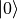 和  。不过量子比特除了可以处于这两种基本状态以外，还可以处于两者之间的叠加态（Superposition State），即 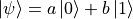 （其中a和b是复数，
。不过量子比特除了可以处于这两种基本状态以外，还可以处于两者之间的叠加态（Superposition State），即 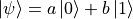 （其中a和b是复数，  ）。例如， 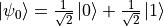 和 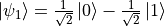 都是合法的量子态。我们也可以使用向量化的语言来表示量子比特的状态。如果我们令 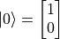 、 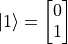，则 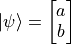、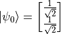、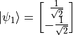。
）。例如， 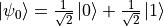 和 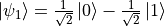 都是合法的量子态。我们也可以使用向量化的语言来表示量子比特的状态。如果我们令 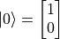 、 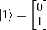，则 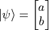、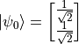、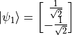。
同时，我们可以用布洛赫球面（Bloch Sphere）来形象地展示单个量子比特的状态。球面的最顶端为 ，最底端为 ，而从原点到球面上任何一点的单位向量都可以是一个量子比特的状态。

布洛赫球面（ Bloch Sphere ）。其中Z轴正负方向的量子态分别为基本态 和 ，X轴正负方向的量子态分别为 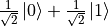 和 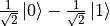 ，Y轴正负方向的量子态分别为 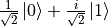 和 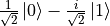 。图示来源¶
{kind=link}
值得一提的是，尽管量子比特 可能的状态相当之多，但一旦我们对其进行观测，则其状态会立即坍缩 2 到 和 这两个基本状态中的一个，其概率分别为 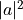 和 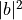 。
量子逻辑门¶
在二进制的经典计算机中，我们有AND（与）、OR（或）、NOT（非）等逻辑门，对输入的比特状态进行变换并输出。在量子计算机中，我们同样有量子逻辑门（Quantum Logic Gate，或简称“量子门”），对量子状态进行变换并输出。如果我们使用向量化的语言来表述量子状态，则量子逻辑门可以看作是一个对状态向量进行变换的矩阵。
例如，量子非门可以表述为 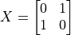 ，于是当我们将量子非门作用于基本态 时，我们得到 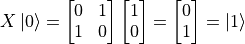。量子门也可以作用在叠加态，例如  （这说明量子非门没能改变量子态 的状态。事实上，量子非门
（这说明量子非门没能改变量子态 的状态。事实上，量子非门  相当于在布洛赫球面上将量子态绕X轴旋转180度。而 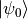 就在X轴上，所以没有变化）。量子与门和或门 3 由于涉及到多个量子位而稍显复杂，但同样可以通过尺寸更大的矩阵实现。
相当于在布洛赫球面上将量子态绕X轴旋转180度。而 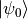 就在X轴上，所以没有变化）。量子与门和或门 3 由于涉及到多个量子位而稍显复杂，但同样可以通过尺寸更大的矩阵实现。
可能有些读者已经想到了，既然单个量子比特的状态不止 和 两种，那么量子逻辑门作为作为对量子比特的变换，其实也完全可以不局限于与或非。事实上，只要满足一定条件的矩阵都可以作为量子逻辑门。例如，将量子态在布洛赫球面上绕X、Y、Z轴旋转的变换  、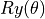 、
、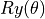 、 （其中
（其中  是旋转角度，当 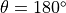 时记为 、
是旋转角度，当 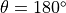 时记为 、 、
、 ）都是量子逻辑门。另外，有一个量子逻辑门“阿达马门”（Hadamard Gate） 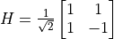 可以将量子状态从基本态转换为叠加态，在很多量子计算的场景中占据了重要地位。
）都是量子逻辑门。另外，有一个量子逻辑门“阿达马门”（Hadamard Gate） 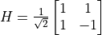 可以将量子状态从基本态转换为叠加态，在很多量子计算的场景中占据了重要地位。
量子线路¶
当我们将量子比特以及量子逻辑门按顺序标记在一条或多条平行的线条上时，就构成了量子线路（Quantum Circuit，或称量子电路）。例如，对于我们在上一节讨论的，使用量子非门 对基本态 进行变换的过程，我们可以写出量子线路如下：

一个简单的量子线路¶
在量子线路中，每条横线代表一个量子比特。上图中最左边的 代表量子比特的初始态。中间的X方块代表量子非门 ，最右边的表盘符号代表测量操作。这个线路的意义是“对初始状态为 的量子比特执行量子非门 操作，并测量变换后的量子比特状态”。根据我们在前节的讨论，变换后的量子比特状态为基本态 ，因此我们可以期待该量子线路最后的测量结果始终为1。
接下来，我们考虑将上图中量子线路的量子非门 换为阿达马门 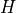 ：

将量子非门 换为阿达马门 后的量子线路¶
阿达马门对应的矩阵表示为 ，于是我们可以计算出变换后的量子态为 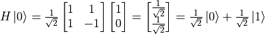 。这是一个 和 的叠加态，在观测后会坍缩到基本态，其概率分别为 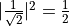 。也就是说，这个量子线路的观测结果类似于扔硬币。假若观测20次，则大约10次的结果是 ，10次的结果是 。
实例：使用Cirq建立简单的量子线路¶
Cirq 是谷歌主导的开源量子计算库，可以帮助我们方便地建立量子线路并模拟测量结果（我们在下一节介绍TensorFlow Quantum的时候还会用到它）。以下代码实现了上节所建立的两个简单的量子线路，并分别进行了20次的模拟测量。
import cirq
q = cirq.LineQubit(0) # 实例化一个量子比特
simulator = cirq.Simulator() # 实例化一个模拟器
X_circuit = cirq.Circuit( # 建立一个包含量子非门和测量的量子线路
cirq.X(q),
cirq.measure(q)
)
print(X_circuit) # 在终端可视化输出量子线路
# 使用模拟器对该量子线路进行20次的模拟测量
result = simulator.run(X_circuit, repetitions=20)
print(result) # 输出模拟测量结果
H_circuit = cirq.Circuit( # 建立一个包含阿达马门和测量的量子线路
cirq.H(q),
cirq.measure(q)
)
print(H_circuit)
result = simulator.run(H_circuit, repetitions=20)
print(result)
结果如下：
0: ───X───M───
0=11111111111111111111
0: ───H───M───
0=00100111001111101100
可见第一个量子线路的测量结果始终为1，第二个量子态的20次测量结果中有9次是0，11次是1（如果你多运行几次，会发现0和1出现的概率趋近于  ）。可见结果符合我们在上节中的分析。
）。可见结果符合我们在上节中的分析。
混合量子-经典机器学习¶
推荐阅读
Broughton, Michael, Guillaume Verdon, Trevor McCourt, Antonio J. Martinez, Jae Hyeon Yoo, Sergei V. Isakov, Philip Massey, et al. “ TensorFlow Quantum: A Software Framework for Quantum Machine Learning. ” ArXiv:2003.02989 [Cond-Mat, Physics:Quant-Ph], March 5, 2020. （TensorFlow Quantum 白皮书）
量子数据集¶
参数化的量子线路（PQC）¶
将参数化的量子线路嵌入机器学习模型¶
实例：对量子数据集进行二分类¶
import cirq
import sympy
import numpy as np
import tensorflow as tf
import tensorflow_quantum as tfq
q = cirq.GridQubit(0, 0)
add_noise = lambda x: x + np.random.normal(0, 0.25 * np.pi)
q_data = tfq.convert_to_tensor(
[cirq.Circuit(
cirq.rx(add_noise(0.5 * np.pi))(q),
cirq.ry(add_noise(0))(q)
) for _ in range(100)] +
[cirq.Circuit(
cirq.rx(add_noise(1.5 * np.pi))(q),
cirq.ry(add_noise(0))(q)
) for _ in range(100)]
)
label = np.array([0] * 100 + [1] * 100)
theta = sympy.Symbol('theta')
q_model = cirq.Circuit(cirq.rx(theta)(q))
q_data_input = tf.keras.Input(shape=() ,dtype=tf.dtypes.string)
expectation_output = tfq.layers.PQC(q_model, cirq.Z(q))(q_data_input)
classifier_output = tf.keras.layers.Dense(2, activation=tf.keras.activations.softmax)(expectation_output)
model = tf.keras.Model(inputs=q_data_input, outputs=classifier_output)
model.compile(
optimizer=tf.keras.optimizers.Adam(learning_rate=0.1),
loss=tf.keras.losses.sparse_categorical_crossentropy,
metrics=[tf.keras.metrics.sparse_categorical_accuracy]
)
model.fit(x=q_data, y=label, epochs=20)
print(model.predict(q_data))